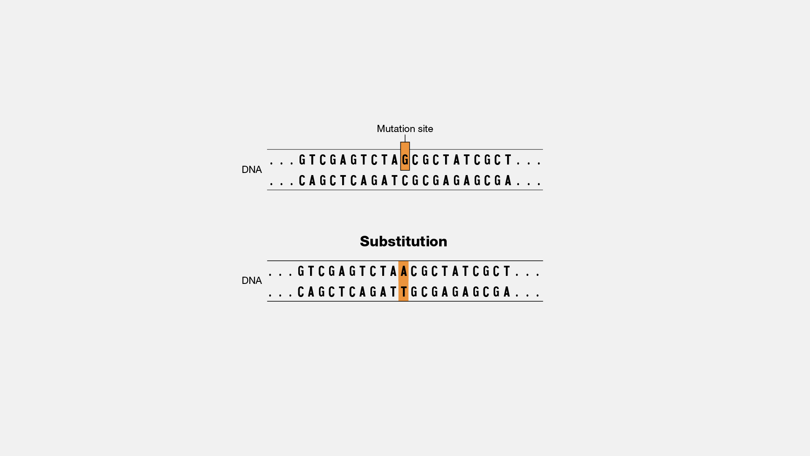
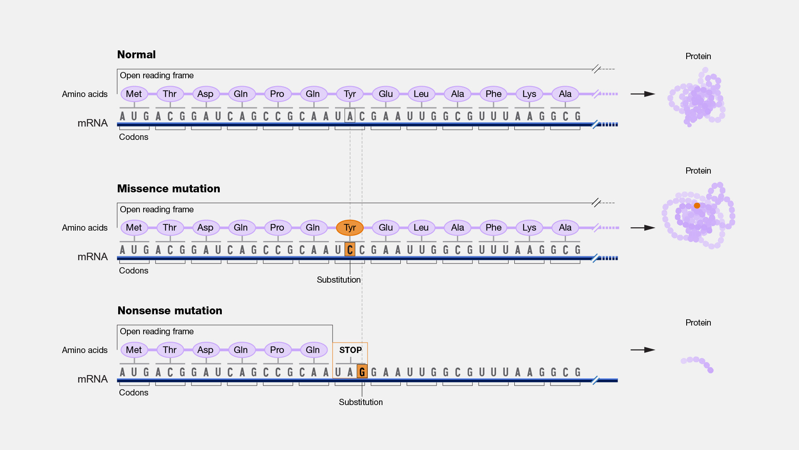
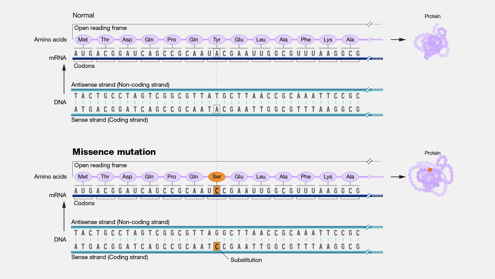
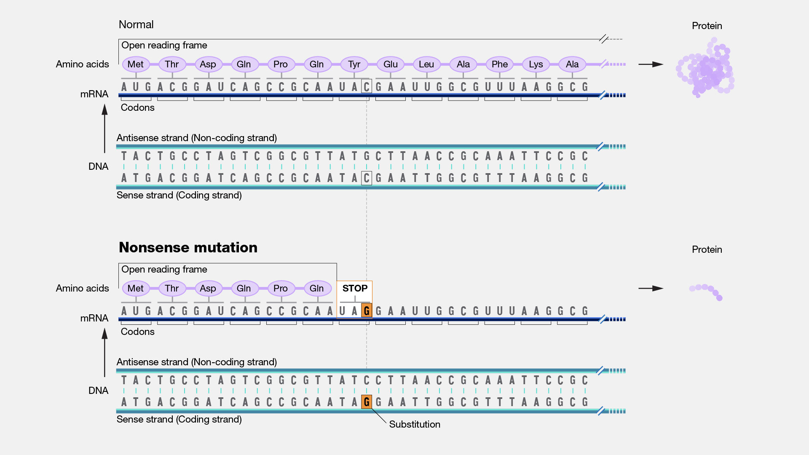
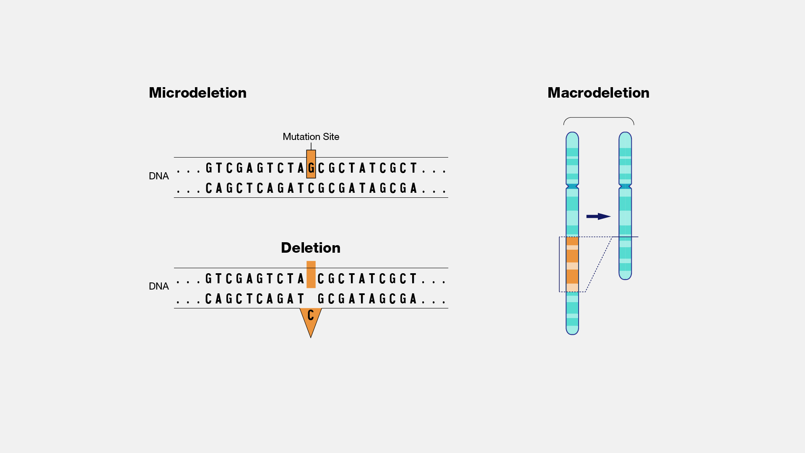
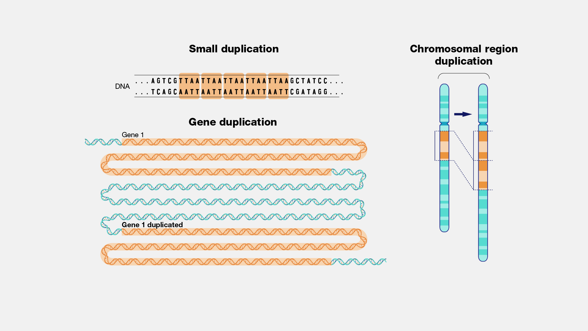
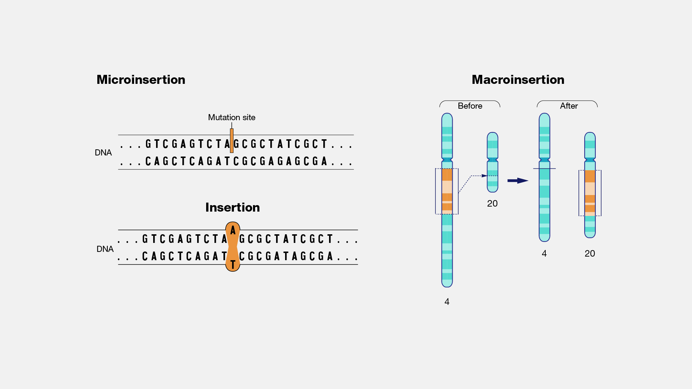
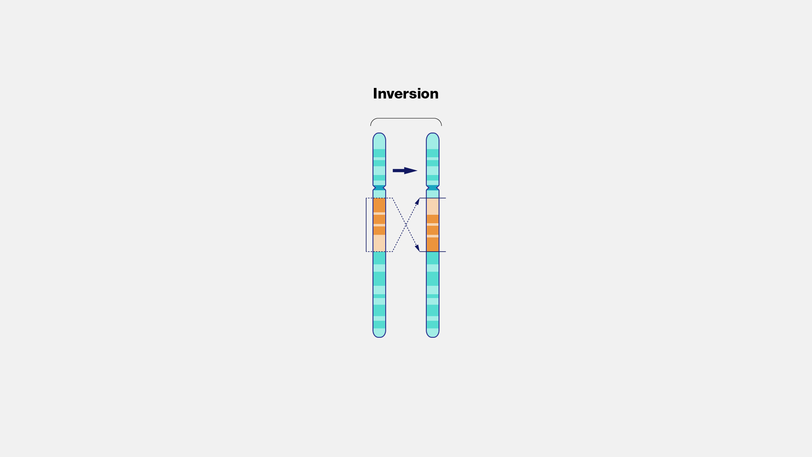
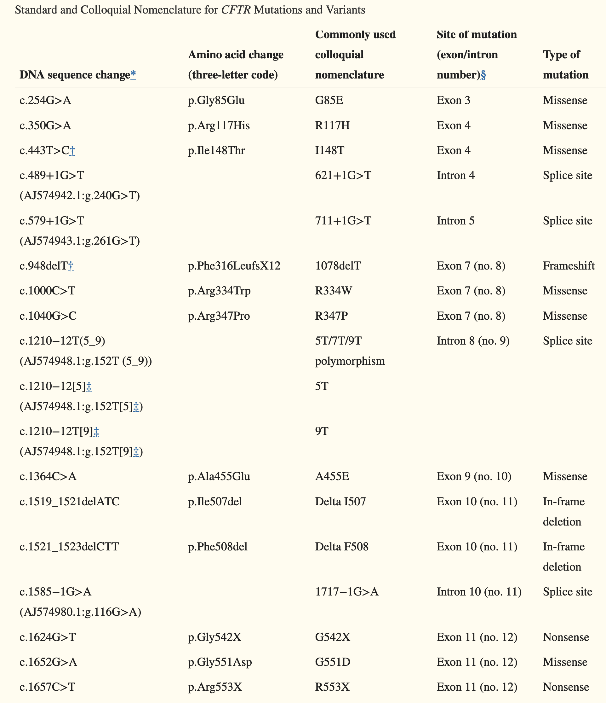

![]()
Indicate the reference sequence
DNA:
- c. → coding DNA
- g. → genomic DNA
- m. → mitochondrial DNA
RNA:
- r. → RNA
Protein:
- p. → protein
Code
| Substitution (for bases) | > |
|---|---|
| range | - |
| more change in one allele | ; |
| more transcripts / mosaicism | , |
| uncertain | () |
| allele | [ ] |
| deletion | del |
| duplication | dup |
| insertion | ins |
| inversion | inv |
| conversion | con |
| extension | ext |
| stop codon | X |
| frame shift | fsX |
| opposite strand | o |
| translocation | t |
Mutation
A mutation is a change in the DNA sequence of an organism. Mutations can result from errors in DNA replication during cell division, exposure to mutagens or a viral infection.
Germline mutations (that occur in eggs and sperm) can be passed on to offspring, while somatic mutations (that occur in body cells) are not passed on.

The translation of disrupted sequence can be checked via Expasy
Substitution
Substitution, as related to genomics, is a type of mutation in which one nucleotide is replaced by a different nucleotide. The term can also refer to the replacement of one amino acid in a protein with a different amino acid.
c.123A>G: on cDNA, A in 123 is replaced by G
p.P252R: on protein, proline (P) replaced by arginine (R)

Point mutation
A point mutation occurs in a genome when a single base pair is added, deleted or changed. While most point mutations are benign, they can also have various functional consequences, including changes in gene expression or alterations in encoded proteins.
A point mutation is when a single base pair is altered. Point mutations can have one of three effects.
First, the base substitution can be a silent mutation where the altered codon corresponds to the same amino acid.
Second, the base substitution can be a missense mutation where the altered codon corresponds to a different amino acid.
Or third, the base substitution can be a nonsense mutation where the altered codon corresponds to a stop signal.

A missense mutation is a DNA change that results in different amino acids being encoded at a particular position in the resulting protein. Some missense mutations alter the function of the resulting protein.

A nonsense mutation occurs in DNA when a sequence change gives rise to a stop codon rather than a codon specifying an amino acid. The presence of the new stop codon results in the production of a shortened protein that is likely non-functional.

Deletion
Deletion, as related to genomics, is a type of mutation that involves the loss of one or more nucleotides from a segment of DNA. A deletion can involve the loss of any number of nucleotides, from a single nucleotide to an entire piece of a chromosome.
- c.546delT, deletion of T in 546
- c.586_591del, for six bases deleted
- p.F508del, deletion of phenylalanine (F) in 508

Duplication
Duplication, as related to genomics, refers to a type of mutation in which one or more copies of a DNA segment (which can be as small as a few bases or as large as a major chromosomal region) is produced. Duplications occur in all organisms. For example, they are especially prominent in plants, although they can also cause genetic diseases in humans. Duplications have been an important mechanism in the evolution of the genomes of humans and other organisms.
- c.546dupT, duplication of T in 546
- c.586_591dup, duplication of the segment 586 to 591
- p.G4_Q6dup, duplication of the segment from glycine (G) in 4 to glutamine (Q) in 6

Insertion
An insertion, as related to genomics, is a type of mutation that involves the addition of one or more nucleotides into a segment of DNA. An insertion can involve the addition of any number of nucleotides, from a single nucleotide to an entire piece of a chromosome.
- c.546_547insT, insertion of T between 546 and 547
- c.1086_1087insGCGTGA, insertion of GCGTGA
- p.K2_L3insQS, insertion of glutamine serine between lysine (K) in 2 and leucine (L) in 3

Inversion
An inversion in a chromosome occurs when a segment breaks off and reattaches within the same chromosome, but in reverse orientation. DNA may or may not be lost in the process.
- c.546_2031inv, segment 546 to 2031 inverted

Frameshift
A frameshift mutation in a gene refers to the insertion or deletion of nucleotide bases in numbers that are not multiples of three. This is important because a cell reads a gene’s code in groups of three bases when making a protein. Each of these “triplet codons” corresponds to one of 20 different amino acids used to build a protein. If a mutation disrupts this normal reading frame, then the entire gene sequence following the mutation will be incorrectly read. This can result in the addition of the wrong amino acids to the protein and/or the creation of a codon that stops the protein from growing longer.
- p.R83SfsX15, arginine (R) is the first amino acid changed, it is in position 83, it makes serine (S) instead, the length of the shift frame is 15, including the stop codon (X)

Example
